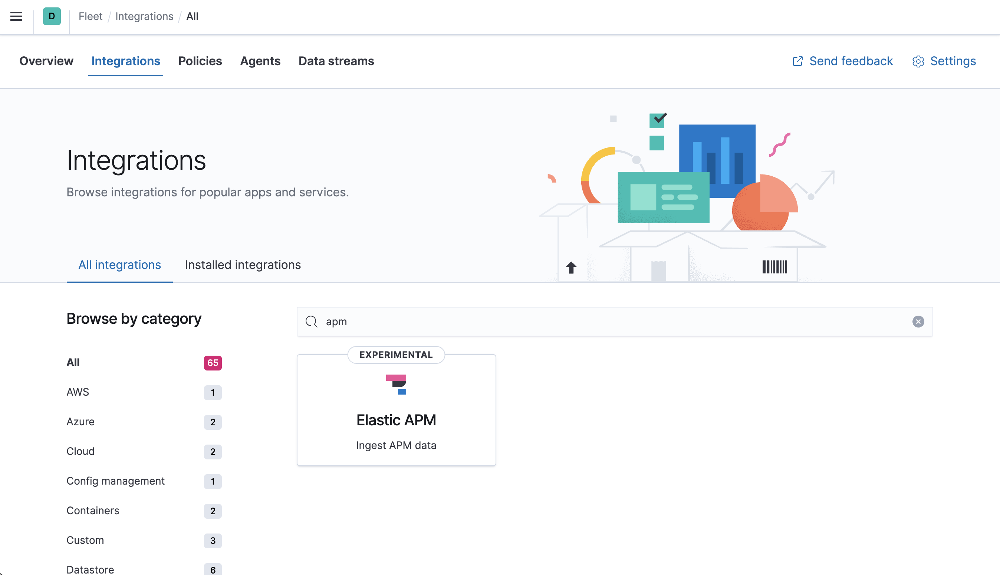
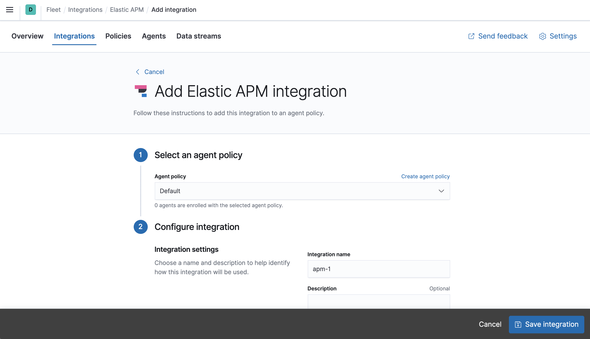

Quick start: Get application traces into the Elastic Stackedit
This functionality is experimental and may be changed or removed completely in a future release. Elastic will take a best effort approach to fix any issues, but experimental features are not subject to the support SLA of official GA features.
This guide describes how to:
- Collect Application Performance Monitoring (APM) data
- Send APM data to the Elastic Stack
- Explore and visualize the data in real-time
For feedback and questions, please contact us in the discuss forum.
Prerequisitesedit
- Please read the Fleet limitations.
- The APM integration is experimental and has a number of known limitations.
-
You need Elasticsearch for storing and searching your data, and Kibana for visualizing and managing it. You can use our hosted Elasticsearch Service on Elastic Cloud (recommended), or self-manage the Elastic Stack on your own hardware.
Here’s what you need for each deployment type:
- Access to a deployment of our hosted Elasticsearch Service on Elastic Cloud. The Elasticsearch Service is available on AWS, GCP, and Azure. Try it out for free.
- User with the superuser role. See Built-in roles.
- Access to an Elasticsearch cluster and Kibana (version 7.13) with a basic license. Learn how to install the Elastic Stack on your own hardware.
-
Secure, encrypted connection between Kibana and Elasticsearch. See:
- Configuring security in Elasticsearch
- Configuring security in Kibana
-
Encrypt communications in Kibana
You can disable the TLS check by setting
xpack.fleet.agents.tlsCheckDisabled: truein the Kibana configuration. For example, you might want to do this if Kibana is behind a proxy that terminates the SSL connection.
- User with the superuser role. See Built-in roles.
-
In the Elasticsearch configuration, the
built-in API key
service must be enabled.
(
xpack.security.authc.api_key.enabled: true) -
In the Kibana configuration, the saved objects encryption key
(
xpack.encryptedSavedObjects.encryptionKey) must be set to any alphanumeric value of at least 32 characters. Fleet requires this setting in order to save API keys and encrypt them in Kibana.
Example security settings
For testing purposes, you can use the following settings to get started quickly, but make sure you properly secure the Elastic Stack before sending real data.
elasticsearch.yml example:
xpack.security.enabled: true xpack.security.authc.api_key.enabled: true
kibana.yml example:
xpack.security.enabled: true xpack.fleet.agents.tlsCheckDisabled: true xpack.encryptedSavedObjects.encryptionKey: "something_at_least_32_characters" elasticsearch.username: "my_username" elasticsearch.password: "my_password"
Step 1: Set up Fleetedit
Use Fleet in Kibana to get APM data into the Elastic Stack.
The first time you use Fleet, you need to set it up:
-
Log in to Kibana and go to Management > Fleet.

-
In Fleet, click Settings and change the defaults, if necessary. For self-managed installations, set the URLs for Elasticsearch and Kibana, including the http ports, then save your changes.

-
Enable central management. Click the Agents tab and click Create user and enable central management.

Step 2: Add an Elastic Agent to Fleetedit
Don’t confuse Elastic Agent with APM agents–they are different components. In a later step, you’ll instrument your code with APM agents and send the data to an APM Server instance that Elastic Agent spins up.
Elastic Agent is a single, unified agent that you can deploy to hosts or containers to collect data and send it to the Elastic Stack. Behind the scenes, Elastic Agent runs the Beats shippers or Elastic Endpoint required for your configuration.
If you plan on enabling Real User Monitoring (RUM), you must run Elastic Agent centrally. If RUM is disabled, you should run Elastic Agent on edge machines.
To send APM data to the Elastic Stack:
- On the Agents tab in Fleet, click Add agent, and look at the deployment instructions under Enroll in Fleet.
-
As instructed, download and extract the Elastic Agent to your host. To do this quickly from the command line, run:
curl -L -O https://artifacts.elastic.co/downloads/beats/elastic-agent/elastic-agent-7.13.0-darwin-x86_64.tar.gz tar xzvf elastic-agent-7.13.0-darwin-x86_64.tar.gz
curl -L -O https://artifacts.elastic.co/downloads/beats/elastic-agent/elastic-agent-7.13.0-linux-x86_64.tar.gz tar xzvf elastic-agent-7.13.0-linux-x86_64.tar.gz
- Download the Elastic Agent Windows zip file from the downloads page.
-
Extract the contents of the zip file into
C:\Program Files. -
Rename the
elastic-agent-<version>-windowsdirectory toElastic-Agent.
To simplify upgrading to future versions of Elastic Agent, we recommended that you use the tarball distribution instead of the DEB distribution.
curl -L -O https://artifacts.elastic.co/downloads/beats/elastic-agent/elastic-agent-7.13.0-amd64.deb sudo dpkg -i elastic-agent-7.13.0-amd64.deb
To simplify upgrading to future versions of Elastic Agent, we recommended that you use the tarball distribution instead of the RPM distribution.
curl -L -O https://artifacts.elastic.co/downloads/beats/elastic-agent/elastic-agent-7.13.0-x86_64.rpm sudo rpm -vi elastic-agent-7.13.0-x86_64.rpm
See the download page for other installation options.
- Back in Fleet, under Choose an agent policy, notice that the default policy is selected. The default policy includes a system integration for collecting logs and metrics from the host system. Use the default policy to get started quickly.
-
Under Enroll and start the Elastic Agent, copy the install command if it’s available for your platform, or make a note of the Kibana URL and enrollment token that Fleet generated.

-
From the agent directory, run the appropriate command to install, enroll, and start an Elastic Agent. Note that this command installs Elastic Agent files in the locations described in Installation layout.
You must run this command as the root user because some integrations require root privileges to collect sensitive data.
You must run this command as the root user because some integrations require root privileges to collect sensitive data.
Open a PowerShell prompt as an Administrator (right-click the PowerShell icon and select Run As Administrator).
From the PowerShell prompt, change to the directory where you installed Elastic Agent, and run:
You must run this command as the root user because some integrations require root privileges to collect sensitive data.
sudo elastic-agent enroll --kibana-url=<kibana_url> --enrollment-token=<enrollment_token> sudo systemctl enable elastic-agent sudo systemctl start elastic-agent
kibana_urlis the Kibana URL where Fleet is running, andenrollment_tokenis the enrollment token acquired from Fleet.The DEB package includes a service unit for Linux systems with systemd. On these systems, you can manage Elastic Agent by using the usual systemd commands. If you don’t have systemd, run
sudo service elastic-agent start.You must run this command as the root user because some integrations require root privileges to collect sensitive data.
sudo elastic-agent enroll --kibana-url=<kibana_url> --enrollment-token=<enrollment_token> sudo systemctl enable elastic-agent sudo systemctl start elastic-agent
kibana_urlis the Kibana URL where Fleet is running, andenrollment_tokenis the enrollment token acquired from Fleet.The RPM package includes a service unit for Linux systems with systemd. On these systems, you can manage Elastic Agent by using the usual systemd commands. If you don’t have systemd, run
sudo service elastic-agent start.Because Elastic Agent is installed as an auto-starting service, it will restart automatically if the system is rebooted.
-
In Fleet, click Continue to go to the Agents tab. You should see the newly enrolled agent.

If the status hangs at Enrolling, make sure the elastic-agent process
is running.
If you run into problems, see Troubleshoot common problems.
Step 3: Add the APM integrationedit
Next, you’ll browse a catalog of integrations, then add an APM integration to the default policy used by your agent. You use policies to manage settings across a group of agents. An agent policy may contain any number of integrations for collecting observability data from the various services running on your host.
-
In Kibana, go back to Management > Fleet, and click the Integrations tab. Use the search bar to find the Elastic APM integration.
 -
Click the APM integration to see more details about it, then click Add Elastic APM.

-
On the Add APM integration page, select the default policy.
In this guide, you add integrations to the default policy created by Kibana. After you learn the basics, you can create your own policies and assign them to agents.
 - Under Configure integration, click the down arrow next to Collect application traces. Under Host, define the host and port where APM Server will listen. Inspect or change other settings.
-
When you’re done, save and deploy the changes.
The newly added APM integration should appear under Integrations in the default policy, along with the default
system-1integration.
All Elastic Agents that use this policy will collect APM data from your instrumented services.
Step 4: Install APM agentsedit
APM agents are written in the same language as your service. To monitor a new service, you must install the agent and configure it with a service name, APM Server host, and Secret token.
-
Service name: The APM integration maps an instrumented service’s name–defined in each APM agent’s configuration–
to the index that its data is stored in Elasticsearch.
Service names are case-insensitive and must be unique.
For example, you cannot have a service named
Fooand another namedfoo. Special characters will be removed from service names and replaced with underscores (_). - APM Server URL: The host and port that APM Server listens for events on. This should match the host and port defined when setting up the APM integration.
- Secret token: Authentication method for APM agent and APM Server communication. This should match the secret token defined when setting up the APM integration.
You can edit your APM integration settings if you need to change the APM Server URL or secret token to match your APM agents.
Install the agent
Install the APM agent packages for Go.
go get go.elastic.co/apm
Configure the agent
Agents are libraries that run inside of your application process.
APM services are created programmatically based on the executable file name, or the ELASTIC_APM_SERVICE_NAME environment variable.
# Initialize using environment variables: # Set the service name. Allowed characters: a-z, A-Z, 0-9, -, _, and space. # If ELASTIC_APM_SERVICE_NAME is not specified, the executable name will be used. export ELASTIC_APM_SERVICE_NAME= # Set custom APM Server URL. Default: http://localhost:8200. export ELASTIC_APM_SERVER_URL= # Use if APM Server requires a token export ELASTIC_APM_SECRET_TOKEN=
Instrument your application
Instrument your Go application by using one of the provided instrumentation modules or by using the tracer API directly.
import (
"net/http"
"go.elastic.co/apm/module/apmhttp"
)
func main() {
mux := http.NewServeMux()
...
http.ListenAndServe(":8080", apmhttp.Wrap(mux))
}
Learn more in the agent reference
Download the APM agent
Download the agent jar from Maven Central. Do not add the agent as a dependency to your application.
Start your application with the javaagent flag
Add the -javaagent flag and configure the agent with system properties.
- Set required service name
- Set custom APM Server URL (default: http://localhost:8200)
- Set the base package of your application
java -javaagent:/path/to/elastic-apm-agent-<version>.jar \
-Delastic.apm.service_name=my-application \
-Delastic.apm.server_urls=http://localhost:8200 \
-Delastic.apm.secret_token= \
-Delastic.apm.application_packages=org.example \
-jar my-application.jar
Learn more in the agent reference
Download the APM agent
Add the agent packages from NuGet to your .NET application. There are multiple NuGet packages available for different use cases.
For an ASP.NET Core application with Entity Framework Core, download the Elastic.Apm.NetCoreAll package. This package will automatically add every agent component to your application.
To minimize the number of dependencies, you can use the Elastic.Apm.AspNetCore package for just ASP.NET Core monitoring, or the Elastic.Apm.EfCore package for just Entity Framework Core monitoring.
If you only want to use the public agent API for manual instrumentation, use the Elastic.Apm package.
Add the agent to the application
For an ASP.NET Core application with the Elastic.Apm.NetCoreAll package,
call the UseAllElasticApm method in the Configure method within the Startup.cs file:
public class Startup
{
public void Configure(IApplicationBuilder app, IHostingEnvironment env)
{
app.UseAllElasticApm(Configuration);
//…rest of the method
}
//…rest of the class
}
Passing an IConfiguration instance is optional and by doing so,
the agent will read config settings through this IConfiguration instance, for example,
from the appsettings.json file:
{
"ElasticApm": {
"SecretToken": "",
"ServerUrls": "http://localhost:8200", //Set custom APM Server URL (default: http://localhost:8200)
"ServiceName" : "MyApp", //allowed characters: a-z, A-Z, 0-9, -, _, and space. Default is the entry assembly of the application
}
}
If you don’t pass an IConfiguration instance to the agent, for example, in a non-ASP.NET Core application,
you can configure the agent with environment variables.
See the agent reference for more information.
Learn more in the agent reference
Install the APM agent
Install the APM agent for Node.js as a dependency to your application.
npm install elastic-apm-node --save
Configure the agent
Agents are libraries that run inside of your application process. APM services are created programmatically based on the serviceName.
This agent supports a variety of frameworks but can also be used with your custom stack.
// Add this to the VERY top of the first file loaded in your app
var apm = require('elastic-apm-node').start({
// Override service name from package.json
// Allowed characters: a-z, A-Z, 0-9, -, _, and space
serviceName: '',
// Use if APM Server requires a token
secretToken: '',
// Set custom APM Server URL (default: http://localhost:8200)
serverUrl: ''
})
Learn more in the agent reference
Install the agent
Install the PHP agent using one of the published packages.
To use the RPM Package (RHEL/CentOS and Fedora):
rpm -ivh <package-file>.rpm
To use the DEB package (Debian and Ubuntu):
dpkg -i <package-file>.deb
To use the APK package (Alpine):
apk add --allow-untrusted <package-file>.apk
If you can’t find your distribution, you can install the agent by {apm-php-ref-v}/setup.html[building it from the source].
Configure the agent
Configure your agent inside of the php.ini file:
elastic_apm.server_url=http://localhost:8200 elastic_apm.secret_token=SECRET_TOKEN elastic_apm.service_name="My-service"
Learn more in the agent reference
- {apm-php-ref-v}/supported-technologies.html[Supported technologies]
- {apm-php-ref-v}/configuration.html[Configuration]
- Django
-
Install the APM agent
Install the APM agent for Python as a dependency.
$ pip install elastic-apm
Configure the agent
Agents are libraries that run inside of your application process. APM services are created programmatically based on the
SERVICE_NAME.# Add the agent to the installed apps INSTALLED_APPS = ( 'elasticapm.contrib.django', # ... ) ELASTIC_APM = { # Set required service name. Allowed characters: # a-z, A-Z, 0-9, -, _, and space 'SERVICE_NAME': '', # Use if APM Server requires a token 'SECRET_TOKEN': '', # Set custom APM Server URL (default: http://localhost:8200) 'SERVER_URL': '', } # To send performance metrics, add our tracing middleware: MIDDLEWARE = ( 'elasticapm.contrib.django.middleware.TracingMiddleware', #... ) - Flask
-
Install the APM agent
Install the APM agent for Python as a dependency.
$ pip install elastic-apm[flask]
Configure the agent
Agents are libraries that run inside of your application process. APM services are created programmatically based on the
SERVICE_NAME.# initialize using environment variables from elasticapm.contrib.flask import ElasticAPM app = Flask(__name__) apm = ElasticAPM(app) # or configure to use ELASTIC_APM in your application settings from elasticapm.contrib.flask import ElasticAPM app.config['ELASTIC_APM'] = { # Set required service name. Allowed characters: # a-z, A-Z, 0-9, -, _, and space 'SERVICE_NAME': '', # Use if APM Server requires a token 'SECRET_TOKEN': '', # Set custom APM Server URL (default: http://localhost:8200) 'SERVER_URL': '', } apm = ElasticAPM(app)
Learn more in the agent reference
Install the APM agent
Add the agent to your Gemfile.
gem 'elastic-apm'
Configure the agent
- Ruby on Rails
-
APM is automatically started when your app boots. Configure the agent by creating the config file
config/elastic_apm.yml:# config/elastic_apm.yml: # Set service name - allowed characters: a-z, A-Z, 0-9, -, _ and space # Defaults to the name of your Rails app service_name: 'my-service' # Use if APM Server requires a token secret_token: '' # Set custom APM Server URL (default: http://localhost:8200) server_url: 'http://localhost:8200'
- Rack
-
For Rack or a compatible framework, like Sinatra, include the middleware in your app and start the agent.
# config.ru require 'sinatra/base' class MySinatraApp < Sinatra::Base use ElasticAPM::Middleware # ... end ElasticAPM.start( app: MySinatraApp, # required config_file: '' # optional, defaults to config/elastic_apm.yml ) run MySinatraApp at_exit { ElasticAPM.stop }Create a config file
Create a config file config/elastic_apm.yml:
# config/elastic_apm.yml: # Set service name - allowed characters: a-z, A-Z, 0-9, -, _ and space # Defaults to the name of your Rack app's class. service_name: 'my-service' # Use if APM Server requires a token secret_token: '' # Set custom APM Server URL (default: http://localhost:8200) server_url: 'http://localhost:8200'
Learn more in the agent reference
Enable Real User Monitoring support in APM Server
APM Server disables RUM support by default.
To enable it, set apm-server.rum.enabled: true in your APM Server configuration file.
Set up the agent
Once RUM support enabled, you can set up the RUM agent.
There are two ways to do this: add the agent as a dependency,
or set it up with <script> tags.
Set up the agent as a dependency
You can install the agent as a dependency to your application with npm install @elastic/apm-rum --save.
The agent can then be initialized and configured in your application like this:
import { init as initApm } from '@elastic/apm-rum'
var apm = initApm({
// Set required service name (allowed characters: a-z, A-Z, 0-9, -, _, and space)
serviceName: 'your-app-name',
// Set custom APM Server URL (default: http://localhost:8200)
serverUrl: '',
// Set service version (required for source map feature)
serviceVersion: ''
})
Framework integrations, like React or Angular, have custom dependencies. See framework integrations for more information.
Set up the agent with <script> tags
Alternatively, you can use <script> tags to set up and configure the agent.
Add a <script> tag to the HTML page and use the elasticApm global object to load and initialize the agent.
Don’t forget to download the latest version of the RUM agent from
GitHub or
UNPKG,
and host the file on your Server/CDN before deploying to production.
<script src="https://your-cdn-host.com/path/to/elastic-apm-rum.umd.min.js" crossorigin></script>
<script>
elasticApm.init({
serviceName: 'your-app-name',
serverUrl: 'http://localhost:8200',
})
</script>
Learn more in the agent reference
Step 5: View your dataedit
Back in Kibana, under Observability, select APM. You should see application performance monitoring data flowing into the Elastic Stack!
The built-in apm_user role is not compatible with the APM integration
as it only provides read access to apm-* indices.

What’s next?edit
- Now that data is streaming into the Elastic Stack, take your investigation to a deeper level! Use Elastic Observability to unify your logs, metrics, uptime, and application performance data.
- Want to protect your endpoints from security threats? Try Elastic Security. Adding endpoint protection is just another integration that you add to the agent policy!
- Are your eyes bleary from staring at a wall of screens? Create alerts and find out about problems while sipping your favorite beverage poolside.
- Want Elastic to do the heavy lifting? Use machine learning to detect anomalies.
- Got everything working like you want it? Roll out your agent policies to other hosts by deploying Elastic Agents across your infrastructure!